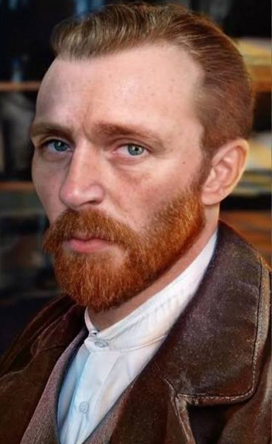

Vincent van Gogh was a Dutch painter who became one of the most influential artists in the history of Western art. He is known for his bold use of colour, expressive brushwork, and paintings that often reflected his surroundings and personal experiences.
Van Gogh began painting seriously as an adult and developed a distinctive style during his career. He created many paintings of landscapes, flowers, portraits, and everyday scenes. His works are recognised for their strong colours, visible brushstrokes, and emotional quality.
Although he received little commercial success during his lifetime, his work became highly influential after his death. Today, his paintings are among the most recognised works of modern art.
Some of his most famous works include The Starry Night, Sunflowers, Irises, and The Bedroom. His artistic style continues to influence artists and art lovers around the world.